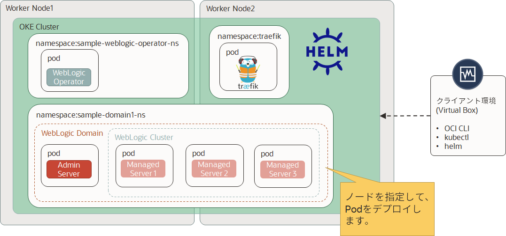

Oracle WebLogic Operator チュートリアル¶
ノードに対するWebLogicのPodの割り当て¶
管理対象サーバー(のPod)を作成すると、KubernetesスケジューラはそのPodが稼働するノードを選択します。スケジューラは、リソースの種別毎にスケジュールされたコンテナが要求するリソースの総量がノードの容量よりも少ないことを確認します。ノード上のメモリやCPUリソースの実際の使用率が極めて少ない場合であっても、ノードの容量チェックに失敗したノードに対してはPodを割り当てません。
特定のノード状にのみPodを配置するように制約するために nodeSelector を利用してアフィニティを作成できます。但し、通常はそのような制約は必要ありません。スケジューラは自動的に合理的な配置を行いますが、以下のようにPodがどこに配置されるかを制御したい場合もあります。
- SSDが搭載されるノードに確実にPodを配置したい
- 同一の可用性ゾーンで頻繁に通信しあう2つの異なるサービスのPodを同居させたい
- 可用性をより高めるためにPodを異なる可用性ゾーンに配置したい
- メンテナンス目的であるノード上から全てのPodを移動したい
- あるソフトウェアのライセンスが与えられたノード上でだけにPadを配置したい
今回のハンズオンでは、個々の管理対象サーバーやドメイン全体を特定のノードに割り当てる方法を学びます。

アフィニティの作成¶
特定のサーバーを指定したノードに配置する¶
ノードにPodを割り当てるためには、カスタム・タグが付与された期待するノードのラベルが必要です。 ドメイン・リソース定義の nodeSelector プロパティを定義し、ノードに適用されているラベルを値として設定します。最後にドメイン設定の変更を反映します。
最初に kubectl get node を使用してノード名を取得します。
kubectl get node
以下のような出力が得られます：
NAME STATUS ROLES AGE VERSION
10.0.10.2 Ready node 6h38m v1.14.8
10.0.10.3 Ready node 6h34m v1.14.8
OKEの場合、ノード名はパブリックIPアドレスもしくはサブネットのCIDRブロックの最初のIPアドレスになることがあります。但し、明確にはノードを特定するユニークな文字列です。
それでは、Podの詳細な情報 kubectl get pod -n sample-domain1-ns -o wide を利用して、現時点のPodの配置を確認しましょう。
kubectl get pod -n sample-domain1-ns -o wide
以下のような出力が得られます：
NAME READY STATUS RESTARTS AGE IP NODE NOMINATED NODE READINESS GATES
sample-domain1-admin-server 1/1 Running 0 11m 10.244.3.26 10.0.10.3 <none> <none>
sample-domain1-create-weblogic-sample-domain-job-djk84 0/1 Completed 0 135m 10.244.3.8 10.0.10.3 <none> <none>
sample-domain1-managed-server1 1/1 Running 0 10m 10.244.3.27 10.0.10.3 <none> <none>
sample-domain1-managed-server2 1/1 Running 0 10m 10.244.3.29 10.0.10.3 <none> <none>
sample-domain1-managed-server3 1/1 Running 0 10m 10.244.3.28 10.0.10.3 <none> <none>
今回のハンズオンでは、トライアル環境のため、ワーカー・ノードを2つしか作成できません。そのため、管理対象サーバーーがいずれかのノードに偏った配置になっていることが確認できます。(上記の場合は、10.0.10.3のノードに偏っています)
今回は、現状の配置を変更することで、個々の管理対象サーバーを特定のノードに割り当てる方法を学びます。ラベルを設定してドメイン・リソース定義をそれに応じて修正するだけです。
Note
ワーカー・ノードが3つ存在する環境の場合は、3つの管理対象サーバーが3つのワーカー・ノードに均等に配置されていることが確認できます。このケースでは1つのノードを退避することができます。
ラベルの設定¶
ノードにラベルを設定します。どのような名前でも大丈夫ですが、ここでは wlservers1 と wlservers2 を使いましょう。kubectl label nodes <nodename> <labelname>=true コマンドを実行してラベル名を正確に置き換えてください。
kubectl label nodes 10.0.10.2 wlservers1=true
kubectl label nodes 10.0.10.3 wlservers2=true
ドメイン・リソース定義の変更¶
定義の変更を適用する前に、一度admin-serverとmanaged-serverのpodを削除します。
以下のコマンドを実行してください。
kubectl edit domain sample-domain1 -n sample-domain1-ns
serverStartPolicyをNEVERに設定して、保存します。
podが完全に削除されるまで待機します。以下のような出力が得られればpodが削除されています。
kubectl get po -n sample-domain1-ns -o wide
以下のような出力が得られます：
NAME READY STATUS RESTARTS AGE IP NODE NOMINATED NODE READINESS GATES
sample-domain1-create-weblogic-sample-domain-job-djk84 0/1 Completed 0 131m 10.244.3.8 10.0.10.3 <none> <none>
再度ドメインリソースを修正します。以下のコマンドを実行してください。
kubectl edit domain sample-domain1 -n sample-domain1-ns
adminServer: のエントリを見つけ、管理サーバーの部分に新しいエントリを挿入してください。
adminServer:
[...]
serverPod:
nodeSelector:
wlservers2: true
文法については domain.yaml のコメント内の記述でダブルチェックできます。
管理対象サーバーの場合は adminServer: と同じインデントのレベルで managedServers: を挿入する必要があります。このプロパティにはPodを識別するためにWebLogicサーバー名を使用する必要があります。サーバー名はWebLogicイメージを作成する際に定義したもので、このチュートリアルに従っている場合は managed-serverX になります。
spec:
[...]
managedServers:
- serverName: managed-server1
serverPod:
nodeSelector:
wlservers1: true
- serverName: managed-server2
serverPod:
nodeSelector:
wlservers2: true
- serverName: managed-server3
serverPod:
nodeSelector:
wlservers1: true
[...]
最後にserverStartPolicyをIF_NEEDEDに設定し、保存します。
Operatorは変更に従ってサーバーの配置を変更します。繰り返し情報を更新して期待した結果が表示されるまで待ってください。
kubectl get po -n sample-domain1-ns -o wide
最終的には以下のような出力が得られます：
NAME READY STATUS RESTARTS AGE IP NODE NOMINATED NODE READINESS GATES
sample-domain1-admin-server 1/1 Running 0 6m1s 10.244.3.31 10.0.10.3 <none> <none>
sample-domain1-create-weblogic-sample-domain-job-djk84 0/1 Completed 0 151m 10.244.3.8 10.0.10.3 <none> <none>
sample-domain1-managed-server1 1/1 Running 0 5m6s 10.244.2.14 10.0.10.2 <none> <none>
sample-domain1-managed-server2 1/1 Running 0 5m6s 10.244.3.32 10.0.10.3 <none> <none>
sample-domain1-managed-server3 1/1 Running 0 5m6s 10.244.2.15 10.0.10.2 <none> <none>
ラベルと nodeSelector エントリの削除¶
ノードの配置を削除するために、ノード名を適切に指定して各ノードのラベルを kubectl label node <nodename> <labelname>- コマンドを使って削除してください。
kubectl label nodes 10.0.10.2 wlservers1-
kubectl label nodes 10.0.10.3 wlservers2-
ドメインリソース 内のノード配置の記述を削除、またはコメントアウトしてください。
kubectl edit domain sample-domain1 -n sample-domain1-ns
一度serverStartPolicyをNEVERに設定して、保存します。
そのあと、serverStartPolicyをIF_NEEDEDに設定して、保存します。Podはスケジューラの決定に基づいて再配置/再起動されます。
続いて、ライセンス対象のノードに対するWebLogicのPodの配置に進んでください。